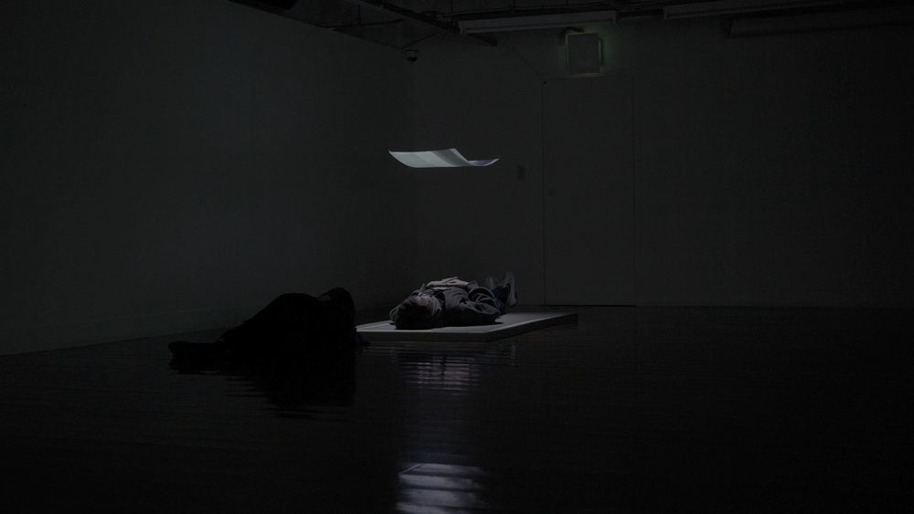
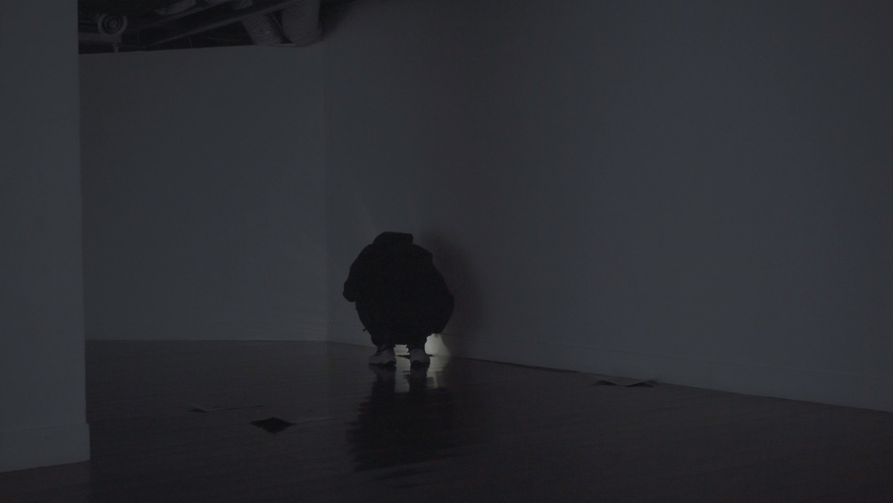
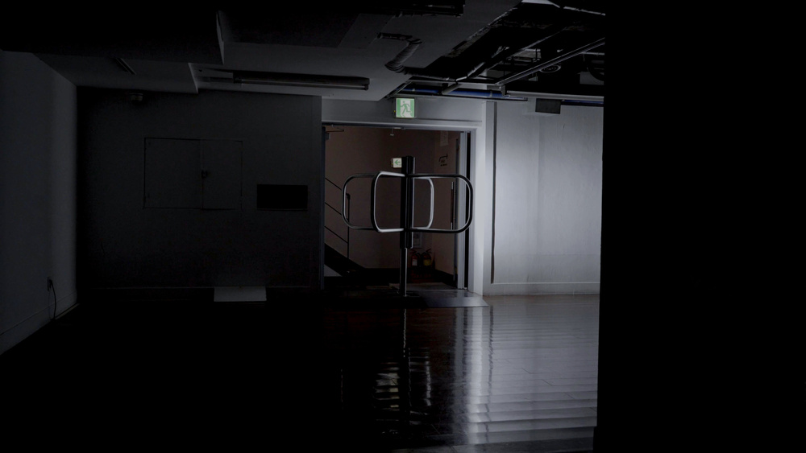
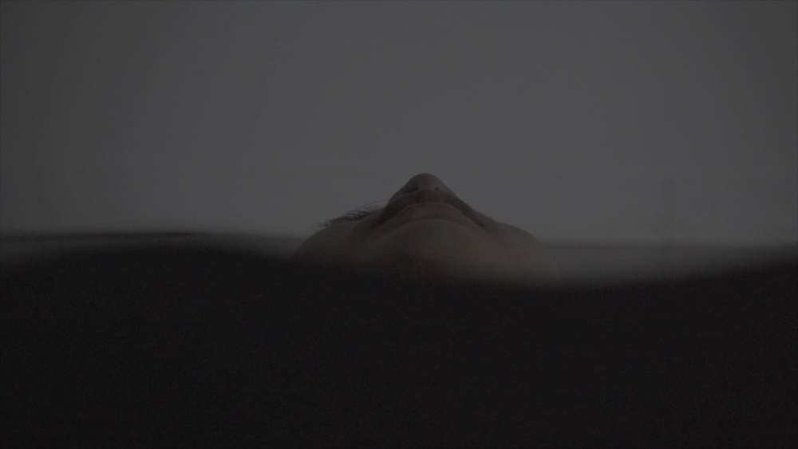
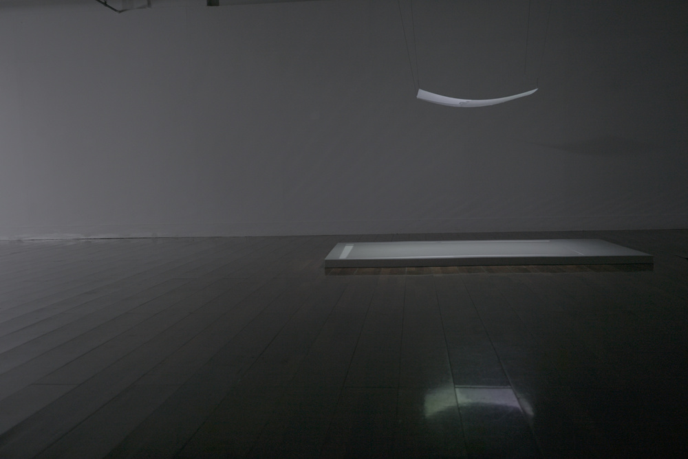
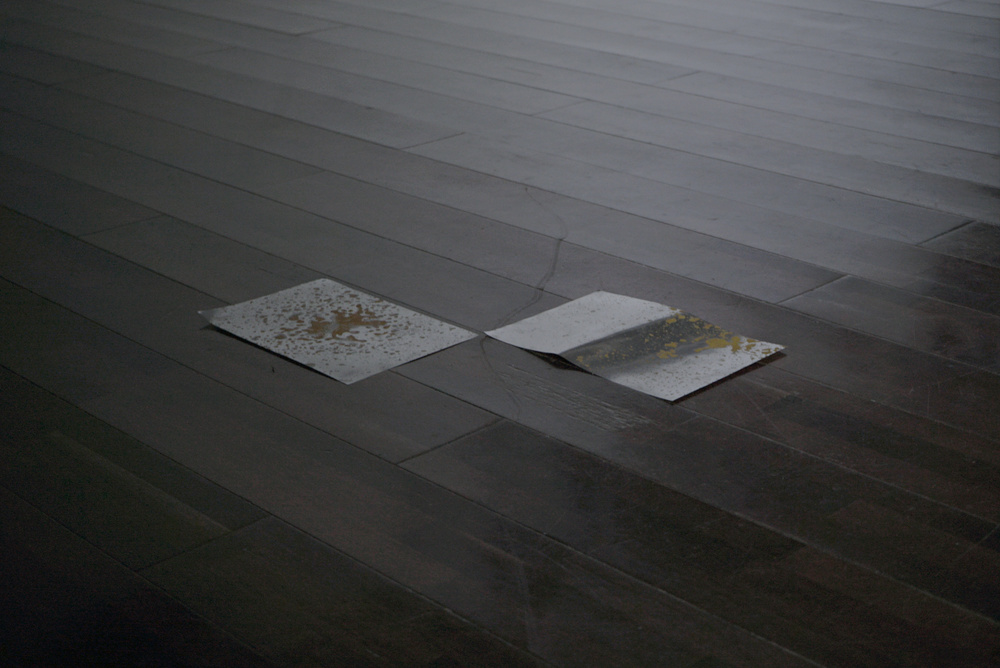

St ill
‹멈 춤›
2019년 11월 5-7일
13:00-18:00
컨셉/제작: 권희수
장면구성: 권희수, 정고운
출연: 임은정(영상), 정고운
St ill
Concept/Production: Kwon Hee-soo
Scene Composition: Kwon Hee-soo, Jeong Go-woon
Cast: Im Eun-jung (video), Jeong Go-woon






‹멈 춤›은 멈춤 혹은 사이의 시간을 몸이 지각하는 방식, 그리고 움직임과 바라보는 행위 사이에 대한 관심에서 출발한다. 몸을 지속적으로 확대시키면 텅 빈 공간과 다르지 않다는 것, 빛과 다름없는 입자이자 파동으로 이루어진 힘의 집합체라는 사실은 몸으로 지각하는 시간성, 혹은 지각하지 못하는 감각에 대한 또 다른 체감을 불러일으켰다.
멈춘다는 것은 무엇일까. 무엇인가를 바라보기 위해 혹은 생각하기 위해, 아니면 눈을 감고 잠에 빠지는 휴지기의 시간, 멈춘 순간에도 멈추지 않는 것이 있다. 동공의 떨림, 몸 내부를 흐르지만 볼 수 없는 움직임, 어둠 속에서 끊임없이 발산하는 빛.
“흑거울이 부착된 벽인 줄 알고 손을 뻗었는데 알고 보니 텅 빈 공간이라 몸이 안쪽으로 기울어진 경험을 한 적이 있습니다. 마치 휘어진 거울 속으로 들어가는 듯한 착시현상이 일으킨 기이한 체험이었습니다.”
빛으로 이루어진 직물로서 몸, 시간의 오차 속에 존재하는 순간에 대한 이러한 균열된 지각체험은 영상을 바라보고 공간을 인식하는 방식에 있어서도 또 다른 질문을 제공했다. 멈춤 또한 춤이라는 가능성, 보이지 않아도 누군가의 시선 속에서 하나의 장면이 될 때, 신체와 시공간 사이, 눈으로 보는 것과 몸으로 감각하는 균열 사이에서 무엇인가 발생한다. 본 작업은 이러한 작가 개인의 경험과 질문에서 출발하여 신체와 시공간의 간극에서 발생하는 것, 눈으로 보는 것과 몸으로 지각하는 것 사이의 관계를 탐구한다.
‹St ill› begins with an interest in the way the body perceives the time between pauses or in-between, and the relationship between movement and looking. The fact that the body is no different from an empty space when continuously expanded, and that it is a collection of forces made up of particles and waves no different from light, brought about another sense of temporality perceived by the body, or a sense that cannot be perceived.
What does it mean to stop? There is something that does not stop even in the moment of pause, whether it is to look at something, to think, or to close one’s eyes and fall asleep. The trembling of the pupils, the movement that flows inside the body but cannot be seen, the light that constantly radiates in the darkness.
“I once stretched out my hand, thinking it was a wall with a black mirror attached, but it turned out to be an empty space, so my body tilted inward. It was a strange experience caused by an optical illusion, as if I were entering a curved mirror.”
As a fabric made of light, the body, this fractured perception of the moment existing in the error of time, also raised another question in the way we look at the video and perceive space. Even pauses have the possibility of being dance, when they become a scene in someone’s gaze even though they are not visible, something happens between the body and space-time, between the cracks of what we see with our eyes and what we perceive with our bodies. This work starts from these personal experiences and questions of the artist and explores what happens in the gap between the body and space-time, and the relationship between what we see with our eyes and what we perceive with our bodies.